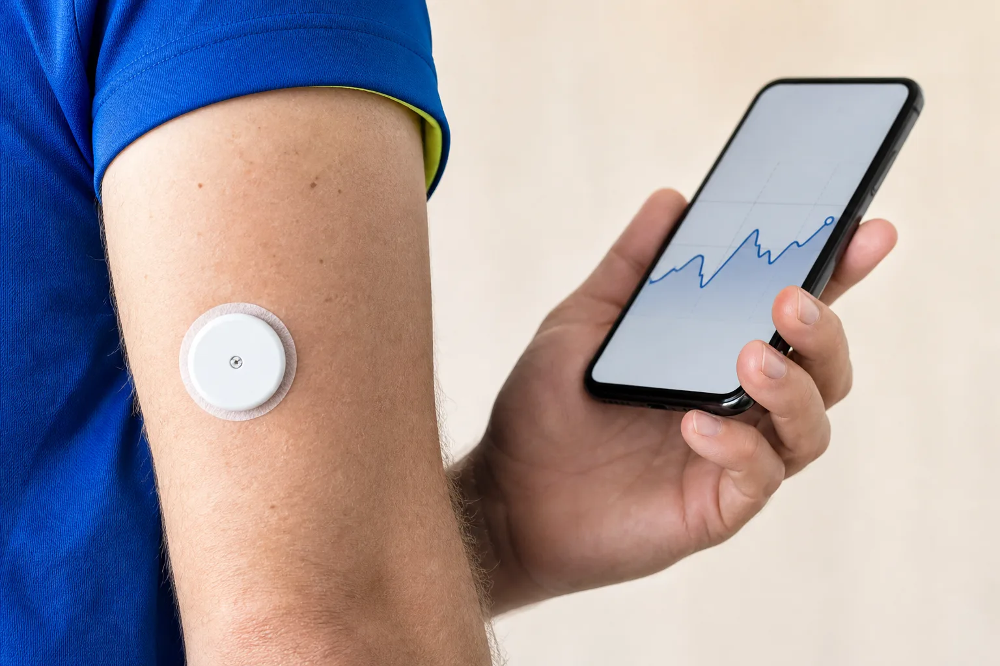
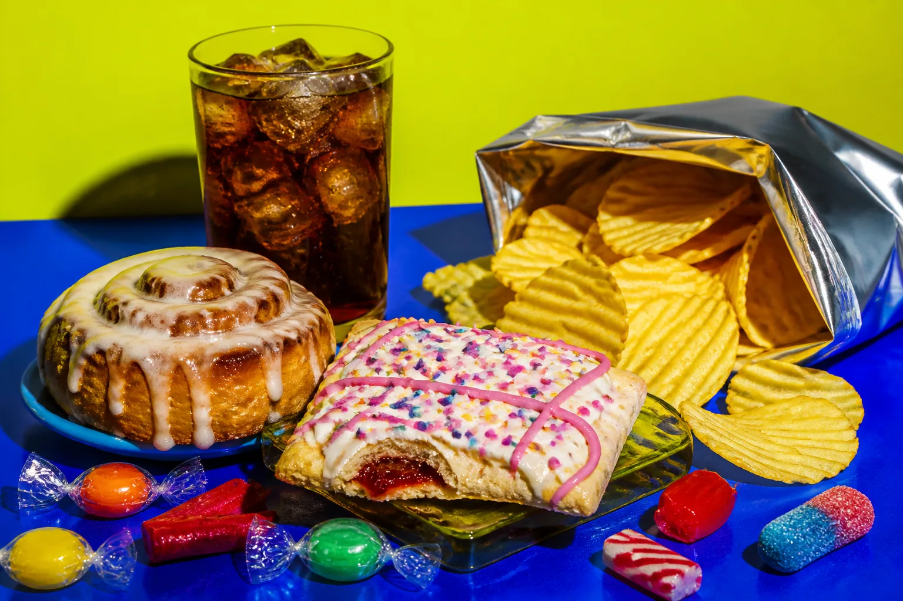

Компенсация
Инсулина больше
Глюкоза ещё может оставаться в референсном диапазоне.
Инсулинорезистентность может долго не менять сахар крови: поджелудочная железа компенсирует слабый ответ тканей, выделяя больше инсулина. Это не диагноз «по внешности» и не личная вина — это изменяемый метаболический риск.
12 источников
исследования и рекомендации
Размер тела — не анализ. Инсулинорезистентность бывает при любом весе, хотя висцеральный жир повышает риск.
Бланк уже есть?
Если в выписке глюкоза и инсулин или липиды — можно посчитать суррогат. Это ориентир для разговора с врачом, не диагноз и не план похудения.
Открыть калькуляторыСигнал есть. Ответ слабее.
После еды инсулин помогает мышцам и жировой ткани забирать глюкозу, а печени — регулировать её производство. При резистентности для того же эффекта требуется больше гормона.
Сначала компенсация может удерживать глюкозу в обычном диапазоне. Со временем у части людей резерв β-клеток* снижается — появляется предиабет, затем диабет 2 типа. Но этот путь не неизбежен.
* β-клетки (бета-клетки) — клетки поджелудочной железы, которые вырабатывают инсулин. «Резерв» здесь — запас прочности: насколько они ещё могут увеличить производство гормона, когда ткани отвечают слабее.
Компенсация
Глюкоза ещё может оставаться в референсном диапазоне.
Резистентность
Печень, мышцы и жировая ткань хуже отвечают на сигнал.
Дисгликемия
Предиабет или диабет возникают не у всех и не сразу.
Один сигнал — много органов
Инсулинорезистентность включена в сеть взаимно усиливающих факторов. Большинство связей двусторонние: например, висцеральный жир ухудшает чувствительность к инсулину, а нарушенный обмен облегчает дальнейший набор веса.
Главный метаболический предшественник
Атерогенная дислипидемия и эндотелиальная дисфункция
Особенно важен висцеральный жир. Отдельный материал ↗
Связь с жировой болезнью печени — MASLD
Когнитивные риски исследуются отдельно
Возможен, но не является диагностическим признаком
Наблюдения ≠ судьба
METS-IR (Metabolic Score for Insulin Resistance) — расчётный суррогат инсулинорезистентности по глюкозе и триглицеридам натощак, ЛПВП и ИМТ; это не прямой замер инсулина. При высоких значениях росла вероятность общей и сердечно-сосудистой смертности. Зависимость была нелинейной, а исследование — наблюдательным: это маркер риска, не «счётчик оставшихся лет».
Открыть PubMed ↗TyG (triglyceride-glucose index) считают по триглицеридам и глюкозе натощак — тоже суррогат инсулинорезистентности, без измерения самого инсулина. Высокий TyG ассоциировался с диабетом 2 типа, MASLD, инсультом, сердечной недостаточностью и деменцией. Качество доказательств различалось по исходам.
Открыть обзор ↗Высокий гликемический индекс рациона ассоциировался с диабетом 2 типа, сосудистыми заболеваниями и общей смертностью. Богатые клетчаткой и цельнозерновые рационы показывали обратное направление связи.
Открыть Lancet ↗У людей с высоким риском программа снижения веса примерно на 7% и не менее 150 минут активности в неделю снизила заболеваемость диабетом за 2,8 года.
Открыть NEJM ↗* Сравнение групп с наиболее высокими и низкими значениями; относительный риск не равен личной вероятности. Корреляции могут частично отражать вес, питание, активность, генетику и другие факторы.
Не один волшебный анализ
В обычной практике ищут нарушения гликемии и оценивают общий риск. «Золотой стандарт» чувствительности к инсулину — гиперинсулинемический эугликемический клэмп — сложен и применяется преимущественно в исследованиях.
Глюкоза натощак
5,6–6,9 ммоль/л · диапазон предиабета ADAСнимок одного момента. Может быть нормальной на ранней стадии компенсации.
HbA1c
5,7–6,4% диапазон предиабета ADAСредняя экспозиция глюкозы за 2–3 месяца; зависит и от состояния эритроцитов.
ОГТТ через 2 часа
7,8–11,0 ммоль/л · после 75 г глюкозыДинамический тест может увидеть нарушение, которого не показывает сахар натощак.
Рассчитывается по глюкозе и инсулину натощак. Результат зависит от метода анализа, возраста, популяции и работы β-клеток — единого международного порога нет.
Врач сопоставляет семейную историю, динамику веса и талии, давление, триглицериды, HDL, глюкозу/HbA1c и при показаниях маркеры состояния печени.

Данные в реальной жизни
PREDICT 1 (Personalized Responses to Dietary Composition Trial) — британское исследование 2020 года: у 1 002 взрослых ответы глюкозы на одинаковые блюда заметно различались. На них влияли состав и время приёма пищи, сон, активность и индивидуальные особенности.
Показать личные паттерны после еды, движения и сна.
Самостоятельно поставить диагноз ИР или предсказать долголетие.
Для людей без диабета пока нет общепринятых «норм» интерпретации CGM: в исследовании 2025 года согласие экспертов было низким. Один пик не делает продукт «запрещённым» — важны повторяемость, порция, состав всего приёма пищи и клинический контекст.
Не идеальность, а повторяемость
Движение
Аэробная и силовая нагрузка улучшают чувствительность к инсулину. Ориентир — постепенно выйти на 150 минут умеренной активности в неделю и добавить 2–3 силовые тренировки в непоследовательные дни. Подробнее — куда уходит глюкоза после еды ↗
Питание
Основа — овощи, бобовые, цельные продукты, орехи, достаточно белка и клетчатки. Ультрапереработанная еда часто сочетает высокую энергетическую плотность, мягкую текстуру и быструю скорость еды.
столько дополнительно съедали участники небольшого стационарного рандомизированного исследования (людей случайно распределяли по рационам) на ультрапереработанной еде; за 2 недели они набрали в среднем 0,9 кг.

Размер порции, клетчатка, белок и жир меняют ответ на углеводы. Цельнозерновые, бобовые и цельные фрукты обычно дают более устойчивый профиль, чем сладкие напитки и очищенные крахмалы.
Умеренное снижение углеводов может улучшать гликемию и HOMA-IR, особенно при диабете и избытке веса. Но долгосрочно нет одного лучшего соотношения для всех: важны качество еды, дефицит энергии при необходимости и соблюдаемость.
Регулярный сон, отказ от курения и снижение веса на 5–7% при его избытке входят в современные программы профилактики. Даже небольшие устойчивые изменения полезнее краткого «идеального» режима.
Коротко
Голод и усталость неспецифичны, а нормальная глюкоза не всегда означает нормальную чувствительность.
Диагностика опирается на историю, осмотр и совокупность лабораторных показателей.
Движение, питание, сон и лечение факторов риска реально снижают вероятность диабета.
проверить самим
Подборка обновлена 1 сентября 2026 года.